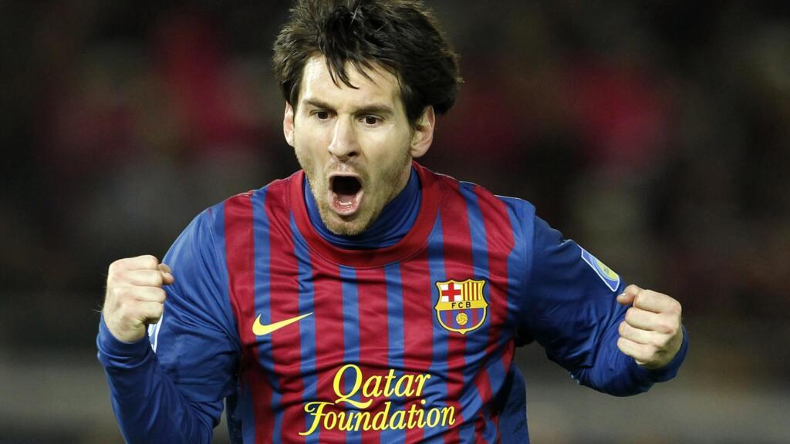

Lionel Andrés "Leo" Messi es un futbolista profesional argentino que juega como delantero y es capitán del Inter Miami de la Major League Soccer y de la selección nacional de Argentina.

| Nombre | Apellido | Pais | |
|---|---|---|---|
| Cristiano | Ronaldo | Portugal | |
| Lionel | Messi | Argentina | |
| James | Rodriguez | Colombia |
lionel Messi ha consolidado su legado con 47 títulos profesionales (41 clubes, 6 selección) a diciembre 2025, destacando el Mundial 2022, 2 Copas América (2021, 2024), 4 Champions League, 10 Ligas españolas y 8 Balones de Oro. Con el FC Barcelona acumuló 35 trofeos, marcando una era dorada.